Real Gabinete Português de Leitura
Situado no coração do Rio de Janeiro, o Real Gabinete Português de Leitura é uma verdadeira obra-prima arquitetônica erguida no imponente estilo neomanuelino. Fundada em 1837 por um grupo de imigrantes portugueses que desejavam promover a cultura entre a comunidade da época, a instituição tornou-se um dos maiores marcos culturais do Brasil. Sua fachada esculpida em pedra de lioz impressiona quem passa pela rua, mas é ao cruzar suas portas que os visitantes são transportados para um cenário digno de contos de fadas, onde a história viva e a literatura se encontram em perfeita harmonia...
Descobrir Arquitetura
Seu interior impressiona com estantes de madeira entalhada que vão do chão ao teto, um lustre monumental e uma claraboia de ferro e vidro, abrigando o maior acervo de autores portugueses fora de Portugal.
-
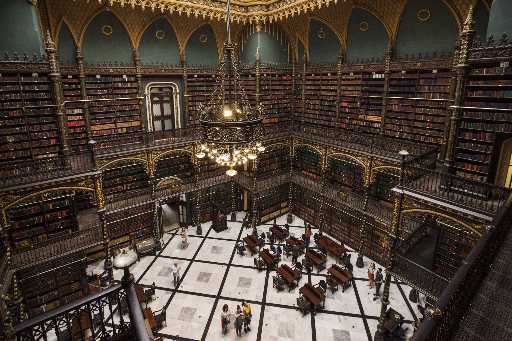
Salão Principal -
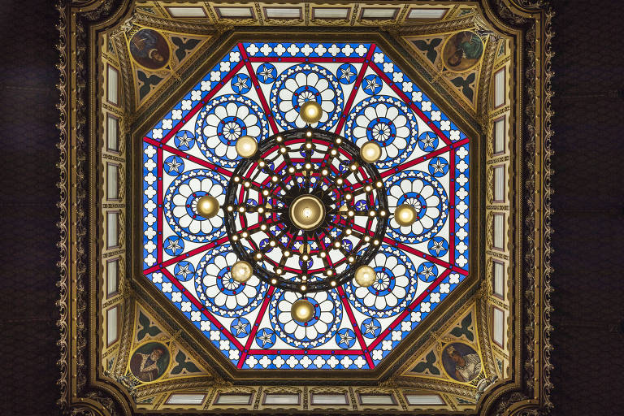
Claraboia -
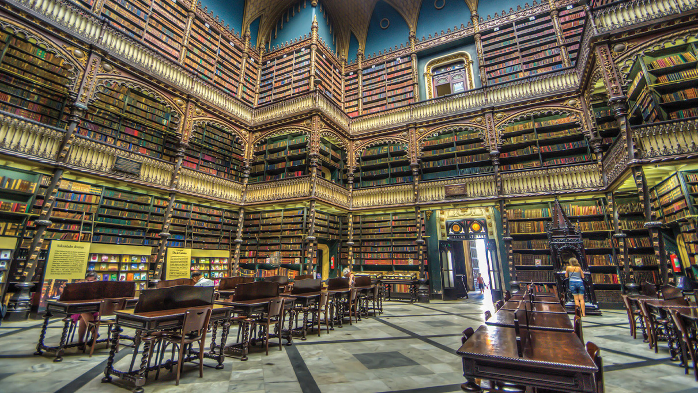
Estantes
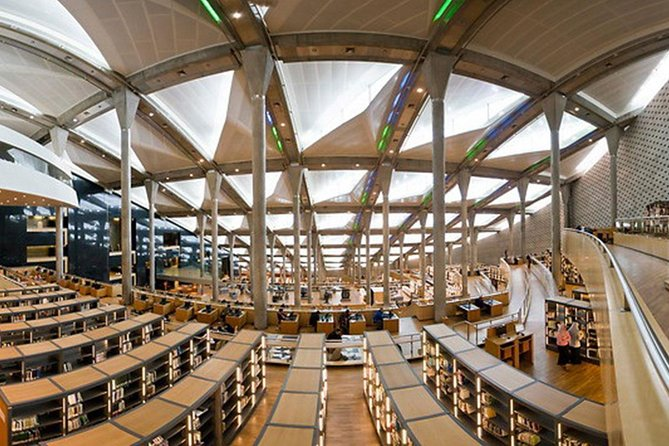
A Nova Biblioteca de Alexandria
Erguida às margens do Mar Mediterrâneo e inaugurada em 2002 no Egito, a Bibliotheca Alexandrina é uma monumental e futurista homenagem à lendária biblioteca da antiguidade, que no passado foi o maior centro de conhecimento do mundo antes de ser tragicamente destruída pelo fogo. Mais do que um simples depósito de livros, o novo complexo renasceu como um polo de excelência em pesquisa, ciência e filosofia, conectando o legado dos grandes pensadores do passado com a tecnologia do futuro. Sua estrutura impressiona não apenas pela importância histórica, mas também por sua engenharia revolucionária e repleta de significados ocultos...
Descobrir Arquitetura
Com um design futurista, seu edifício principal tem a forma de um enorme disco inclinado em direção ao mar Mediterrâneo, simbolizando o sol do conhecimento nascendo para o mundo.
-
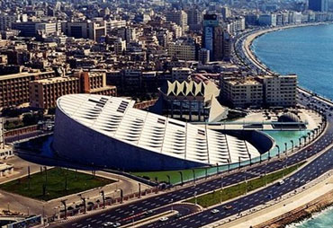
Exterior -
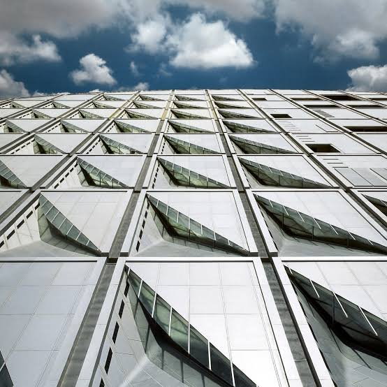
Teto Solar -
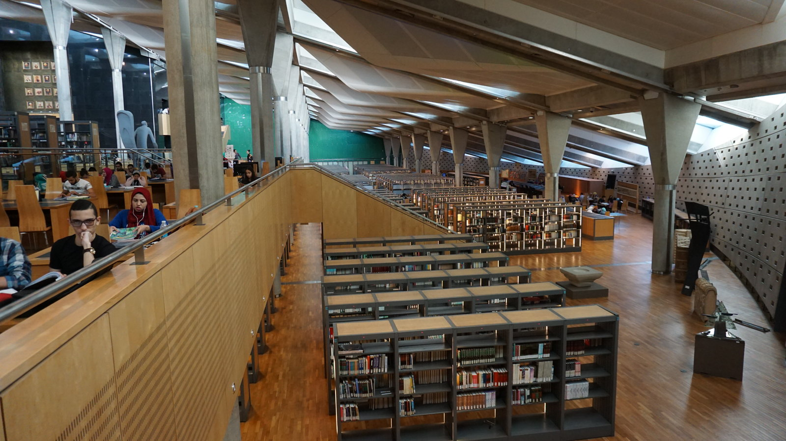
Salão Principal
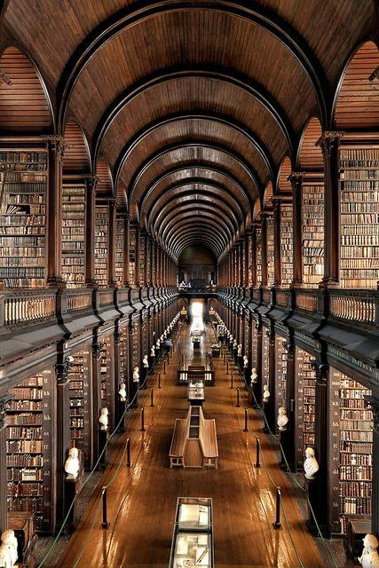
A Antiga Biblioteca do Trinity College
Situada no coração de Dublin, na Irlanda, a icônica "Long Room" (Sala Longa) da antiga biblioteca do Trinity College é o verdadeiro sonho de consumo de qualquer amante dos livros e da história. Construída entre os anos de 1712 e 1732, essa magnífica galeria não é apenas uma das bibliotecas mais famosas do planeta, mas também um santuário que respira séculos de conhecimento acadêmico. O ambiente imponente atrai viajantes, estudantes e pesquisadores do mundo inteiro, combinando uma atmosfera solene com uma arquitetura de tirar o fôlego que parece ter saído diretamente das páginas de um romance clássico...
Descobrir Arquitetura
Com quase 65 metros de comprimento, essa sala icônica abriga mais de 200 mil dos livros mais antigos da instituição sob um teto abobadado de madeira escura, guardando também o famoso "Livro de Kells", um manuscrito medieval raríssimo.
-
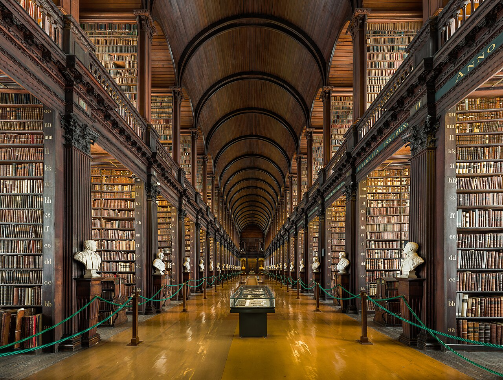
Long Room -
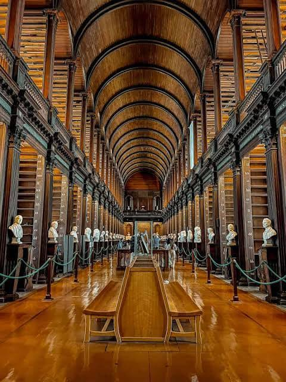
Abóbada -
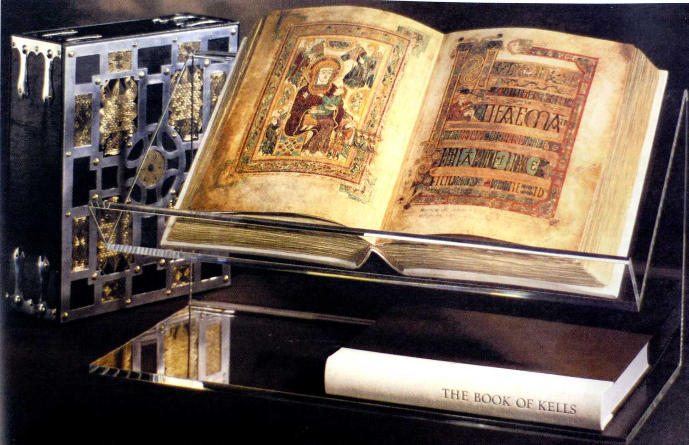
Livro de Kells